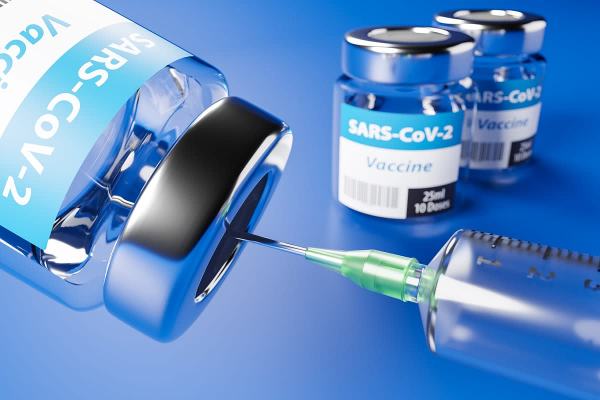

SARS‑CoV‑2 (Severe acute respiratory syndrome coronavirus 2)
Severe acute respiratory syndrome coronavirus 2 (SARS‑CoV‑2) is a strain of coronavirus that causes COVID-19 (coronavirus disease 2019), the respiratory illness responsible for the ongoing COVID-19 pandemic. The virus previously had a provisional name, 2019 novel coronavirus (2019-nCoV), and has also been called human coronavirus 2019 (HCoV-19 or hCoV-19). First identified in the city of Wuhan, Hubei, China, the World Health Organization declared the outbreak a Public Health Emergency of International Concern on 30 January 2020, and a pandemic on 11 March 2020. SARS‑CoV‑2 is a positive-sense single-stranded RNA virus that is contagious in humans. As described by the US National Institutes of Health, it is the successor to SARS-CoV-1, the virus that caused the 2002–2004 SARS outbreak.
SARS‑CoV‑2 is a virus of the species severe acute respiratory syndrome–related coronavirus (SARSr-CoV). It is of zoonotic origins and has close genetic similarity to bat coronaviruses, suggesting it emerged from a bat-borne virus. Research is ongoing as to whether SARS‑CoV‑2 came directly from bats or indirectly through any intermediate hosts. The virus shows little genetic diversity, indicating that the spillover event introducing SARS‑CoV‑2 to humans is likely to have occurred in late 2019.
Epidemiological studies estimate that, in the December 2019 – September 2020 period, each infection resulted in an average of 2.4 to 3.4 new ones when no members of the community are immune and no preventive measures are taken. However, some subsequent variants have become more infectious. The virus primarily spreads between people through close contact and via aerosols and respiratory droplets that are exhaled when talking, breathing, or otherwise exhaling, as well as those produced from coughs or sneezes. It enters human cells by binding to angiotensin-converting enzyme 2 (ACE2), a membrane protein that regulates the renin–angiotensin system.
Several notable variants of SARS-CoV-2 emerged in late 2020. The World Health Organization has currently declared five variants of concern, which are as follows:
- Alpha: Lineage B.1.1.7 emerged in the United Kingdom in September 2020, with evidence of increased transmissibility and virulence. Notable mutations include N501Y and P681H.
- Beta: Lineage B.1.351 emerged in South Africa in May 2020, with evidence of increased transmissibility and changes to antigenicity, with some public health officials raising alarms about its impact on the efficacy of some vaccines. Notable mutations include K417N, E484K and N501Y.
- Gamma: Lineage P.1 emerged in Brazil in November 2020, also with evidence of increased transmissibility and virulence, alongside changes to antigenicity. Similar concerns about vaccine efficacy have been raised. Notable mutations also include K417N, E484K and N501Y.
- Delta: Lineage B.1.617.2 emerged in India in October 2020. There is also evidence of increased transmissibility and changes to antigenicity.
- Omicron: Lineage B.1.1.529 emerged in Botswana in November 2021.
Origin of SARS-CoV-2
The first known infections from SARS‑CoV‑2 were discovered in Wuhan, China.The original source of viral transmission to humans remains unclear, as does whether the virus became pathogenic before or after the spillover event. Because many of the early infectees were workers at the Huanan Seafood Market, it has been suggested that the virus might have originated from the market. However, other research indicates that visitors may have introduced the virus to the market, which then facilitated rapid expansion of the infections. A March 2021 WHO-convened report stated that human spillover via an intermediate animal host was the most likely explanation, with direct spillover from bats next most likely. Introduction through the food supply chain and the Huanan Seafood Market was considered another possible, but less likely, explanation. An analysis in November 2021, however, said that the earliest-known case had been misidentified and that the preponderance of early cases linked to the Huanan Market argued for it being the source.
Bats are considered the most likely natural reservoir of SARS‑CoV‑2. Differences between the bat coronavirus and SARS‑CoV‑2 suggest that humans may have been infected via an intermediate host; although the source of introduction into humans remains unknown.
Signs and symptoms
People with COVID-19 have had a wide range of symptoms reported – ranging from mild symptoms to severe illness. Symptoms may appear 2-14 days after exposure to the virus. Anyone can have mild to severe symptoms. People with these symptoms may have COVID-19:
- Fever or chills
- Cough
- Shortness of breath or difficulty breathing
- Fatigue
- Muscle or body aches
- Headache
- New loss of taste or smell
- Sore throat
- Congestion or runny nose
- Nausea or vomiting
- Diarrhea
Seek Emergency Medical Attention When:
- Trouble breathing
- Persistent pain or pressure in the chest
- New confusion
- Inability to wake or stay awake
- Pale, gray, or blue-colored skin, lips, or nail beds, depending on skin tone
Transmission
COVID-19 spreads when an infected person breathes out droplets and very small particles that contain the virus. These droplets and particles can be breathed in by other people or land on their eyes, noses, or mouth. In some circumstances, they may contaminate surfaces they touch. People who are closer than 6 feet from the infected person are most likely to get infected.
COVID-19 is spread in three main ways:
- Breathing in air when close to an infected person who is exhaling small droplets and particles that contain the virus.
- Having these small droplets and particles that contain virus land on the eyes, nose, or mouth, especially through splashes and sprays like a cough or sneeze.
- Touching eyes, nose, or mouth with hands that have the virus on them.
Diagnosis
Many types of tests are used to detect SARS-CoV-2,1 and their performance characteristics vary.
- Some tests provide results rapidly (within minutes); others require time for processing.
- Some must be performed in a laboratory by trained personnel, some can be performed at the point of care, and others can be performed at home or anywhere.
- Some tests are very sensitive (i.e., few false-negative results or few missed detections of SARS-CoV-2); others are very specific (i.e., few false-positive results or few tests incorrectly identifying SARS-CoV-2 when the virus is not present); and some are both sensitive and specific.
- Some tests can be performed frequently because they are less expensive and easier to use than other tests, and supplies are readily available.
When selecting which SARS-CoV-2 test to use healthcare providers, public health professionals, and those organizing and implementing testing should consider the context in which they are being used, including the prevalence of SARS-CoV-2 in the population being tested and the status (signs, symptoms, close contacts) of the person being tested.
Prevention
How to protect and prevent yourself & others from SARS-CoV-2 infection, include:
- Get Vaccinated and stay up to date on your COVID-19 vaccines
- Wear a mask
- Stay 6 feet away from others
- Avoid poorly ventilated spaces and crowds
- Test to prevent spread to others
- Wash your hands often
- Cover coughs and sneezes
- Clean and disinfect
- Monitor your health daily
- Follow recommendations for quarantine
- Follow recommendations for isolation
- Take precautions when you travel
Treatment
Once vaccines are demonstrated to be safe and efficacious, they must be approved by national regulators, manufactured to exacting standards, and distributed. WHO is working with partners around the world to help coordinate key steps in this process, including to facilitate equitable access to safe and effective COVID-19 vaccines for the billions of people who will need them.
The Pfizer/BioNtech Comirnaty vaccine was listed for WHO Emergency Use Listing (EUL) on 31 December 2020. The SII/Covishield and AstraZeneca/AZD1222 vaccines (developed by AstraZeneca/Oxford and manufactured by the Serum Institute of India and SK Bio respectively) were given EUL on 16 February. The Janssen/Ad26.COV 2.S developed by Johnson & Johnson, was listed for EUL on 12 March 2021. The Moderna COVID-19 vaccine (mRNA 1273) was listed for EUL on 30 April 2021 and the Sinopharm COVID-19 vaccine was listed for EUL on 7 May 2021. The Sinopharm vaccine is produced by Beijing Bio-Institute of Biological Products Co Ltd, subsidiary of China National Biotec Group (CNBG).
Equitable access to safe and effective vaccines is critical to ending the COVID-19 pandemic, so it is hugely encouraging to see so many vaccines proving and going into development. WHO is working tirelessly with partners to develop, manufacture and deploy safe and effective vaccines.
Safe and effective vaccines are a game-changing tool: but for the foreseeable future we must continue wearing masks, cleaning our hands, ensuring good ventilation indoors, physically distancing and avoiding crowds.
vaccinated does not mean that we can throw caution to the wind and put ourselves and others at risk, particularly because research is still ongoing into how much vaccines protect not only against disease but also against infection and transmission.
But it’s not vaccines that will stop the pandemic, it’s vaccination. We must ensure fair and equitable access to vaccines, and ensure every country receives them and can roll them out to protect their people, starting with the most vulnerable.